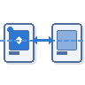
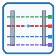

1
The first six tools
From → To · representative tasks each tool replacesSheet Setup
One-click MEP sheet & view scaffolding
From
Manually create plans + sheets per level × discipline; place each viewport
→
To
Pick title block, scope box, levels, trades, then the tool builds, numbers, places
Estimated savings: ~4–6 hrs / project*
Sheet Manager
Bulk rename, renumber, duplicate, revise
From
Edit sheets one at a time in the project browser; lose viewport alignment on duplicate
→
To
Group by prefix, multi-select, live preview; duplicate keeps viewports aligned
Estimated savings: ~1–2 hrs / package*

Align Views
Match viewport & title position across sheets
From
Nudge each viewport so plans land in the same XY across a sheet set
→
To
Pick a master, check matching sheets, snap viewport + title in one go
Estimated savings: ~30–60 min / set*
Revisions Manager
Revisions + sheet coverage + cloud finder
From
Bounce between Revit's revision dialog, browser, and clouds to verify coverage
→
To
One panel: edit revisions, apply to selected sheets, jump to any cloud
Estimated savings: ~1 hr / issuance*

View Range Helper
Live plan + section preview of view range
From
Trial-and-error with numeric Top/Cut/Bottom dialog until walls show right
→
To
Drag colored planes on a live section preview; template locks handled
Estimated savings: ~15 min / problem view*
View Templates Manager
Single + bulk-edit view templates
From
Open each template, change the same VG override, repeat 30+ times
→
To
Multi-select templates, build override once, apply to all
Estimated savings: ~2–4 hrs / standard update*
* Time savings are rough internal estimates from early in-firm use, not measured benchmarks.
2
Built with AI
How one practitioner ships six toolsAI does the grunt work
Boilerplate Python, WPF event wiring, repetitive Revit API calls. AI now writes in minutes the same code that used to take days. What's left is the work that actually requires judgment: scoping the problem, choosing the architecture, reviewing the diff, and catching what AI quietly gets wrong about a thirty-year-old API.
Speed compounds when there's a system
Days-to-beta instead of months. The compounding starts when six tools share one design system, one repo, one release process, and one backlog. AI writes the parts. The system around the parts is what turns shipped code into a product, and that system has to be defined, maintained, and governed by someone who knows both the toolchain and the workflow.
3
Where the code lives, and how it gets to engineers
Click any step to see what happens there
1
💻
Developer's
laptop
laptop
2
⎙
GitHub
repo
repo
3
📦
Versioned
release
release
4
🏢
Firm
extensions
extensions
5
🏗
Engineer's
Revit
Revit
6
💬
Feedback
loop
loop
Step 1 of 6
The same loop every tool follows. Click any step to see what happens there. The cycle never ends; feedback always seeds the next change.
4
How a tool gets built
Four-stage lifecycle modeled on standard tech-company SDLCStage 1
Discover
- Spot a repetitive task; file an issue with examples
- Triage: automatable + frequent enough to fund?
Stage 2
Develop & Test
- Scope, branch off
main, pair-program with Claude - CI runs structural tests; self-test in real projects; review before merge
Stage 3
Release & Support
- Semver tag;
build.ps1+deploy.ps1push to firm extensions root - Triage incoming issues; hotfix branches for breakage
Stage 4
Iterate & Expand
- Feedback informs the next version of each tool
- Recurring patterns become the next tool in the suite
5
Summary & Discussion
Opportunity · Challenges · RecommendationsOpportunity
- Reduce time spent on repetitive tasks
- Democratize automation, and eventually engineering itself
- Free up time for more projects, new skills, and creativity
AI Challenges
- Tool anarchy: duplication, overlapping scope, inconsistent UI
- Limited code knowledge: tools become hard to maintain or debug
- Hallucinations: quietly introduced errors, unintended changes
Recommendations
Near-term
- More prototyping and experimentation
- Validation and iteration with engineers
- AI funding (tokens) and training
Forward-looking
- Tool strategy: organization, standards, look & feel, no redundancy
- Development process: rigorous test & release so live tools don't break
- Governance: quality, consistency, usability, coverage
- Investigate tools for other roles in the firm